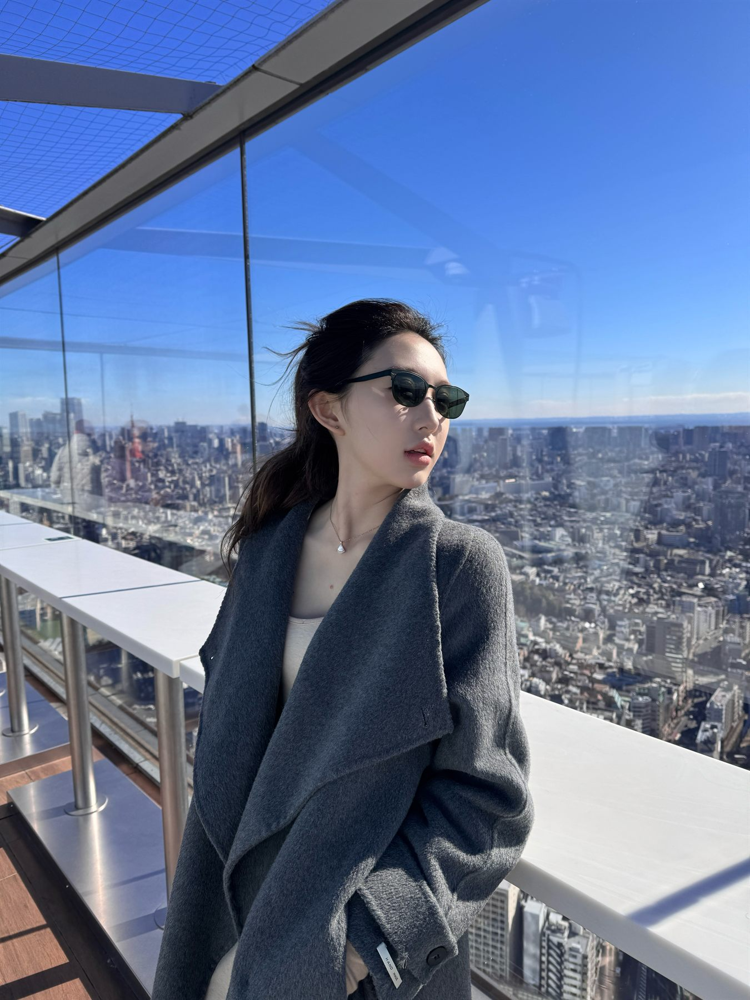
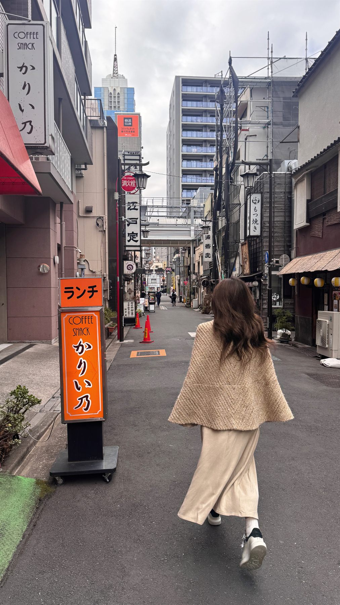
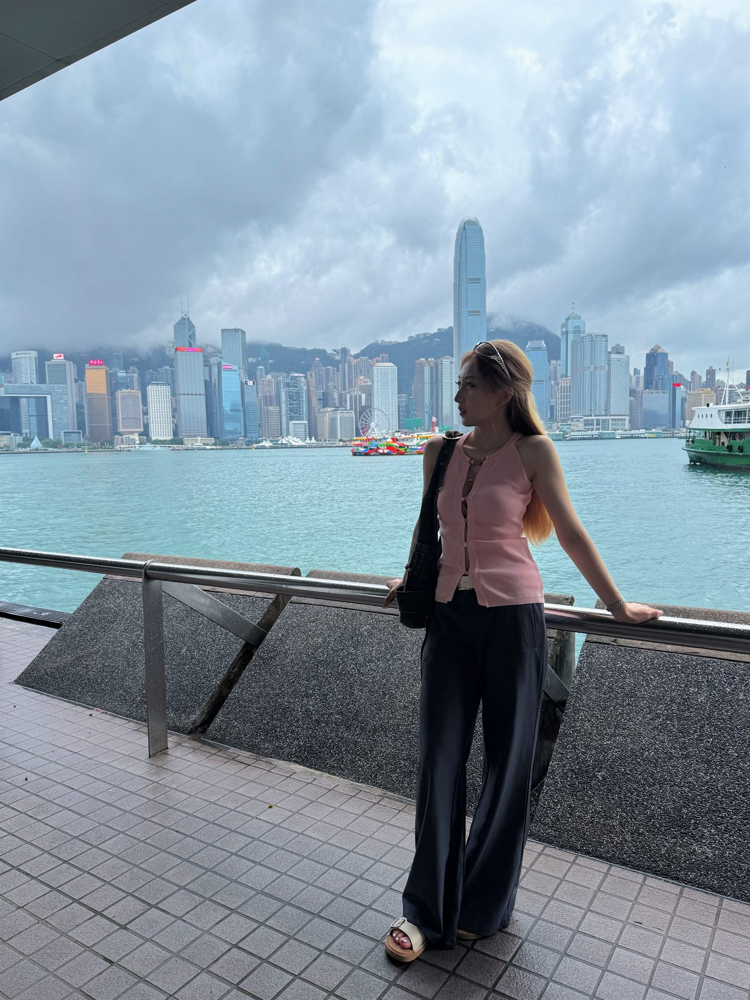

01 / Relationship
人与关系
我很在意人与人之间细微的理解。很多关系的靠近不是靠热闹， 而是靠被准确地听见。
和我聊天时，我会很在意那些没有直接说出口的部分。
Personal mind map
这里记录一些我反复思考的事：关系、自我、痛苦、独处、表达， 以及如何慢慢成为更清楚的人。
Move / hover / click nodes



比起用几个标签快速定义自己，我更想把自己摊开成一张地图： 有些区域清晰，有些区域还在雾里，但每一个节点都真实地影响着我。
01 / Relationship
我很在意人与人之间细微的理解。很多关系的靠近不是靠热闹， 而是靠被准确地听见。
和我聊天时，我会很在意那些没有直接说出口的部分。
02 / Self
我常常用矛盾来形容自己。它带来焦虑，也让我不断复盘自己真实的想法和选择。
很多答案不是一下子出现的，而是在反复复盘里慢慢变清楚。
03 / Alone
咖啡厅、艺术馆、阅读、看展，是我整理自己的方式， 也是我和自己慢慢和解的出口。
04 / Expression
我曾经害怕表达不够成熟。后来发现勇敢说出当下的想法， 才能让别人了解你，也能让模糊得到确认。
我正在练习把当下的想法说出来，而不是等它完全成熟。
05 / Vitality
有生命力的人和事，真诚的回答，经过思考后的表达， 会让我感到自己被轻轻唤醒。
我想靠近那些让我重新感到轻盈和有力量的人与事。
Connection